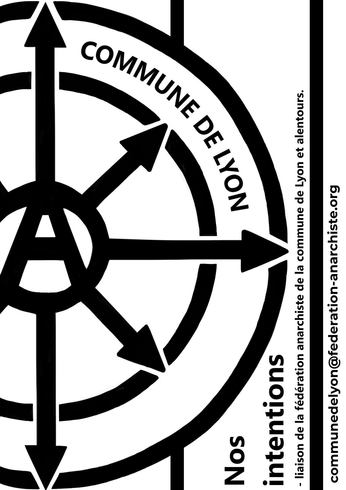
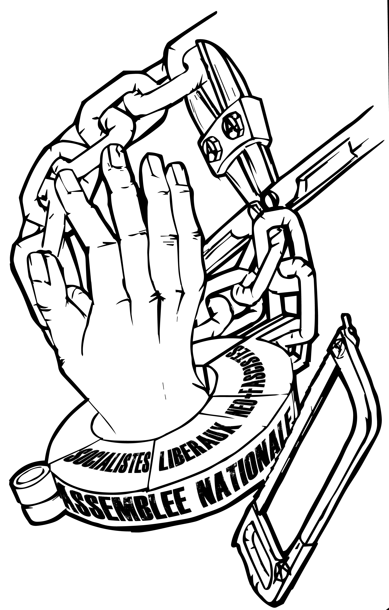

Nos communiqués
La liste des communiqués locaux de Lyon
* Ajouter listes communiqués *

Livret d'intention
Nos intentions à Lyon et Villeurbanne

Critique du Parti
Extrait du livret "critique de l'organisation en Parti" diffusé à Lyon